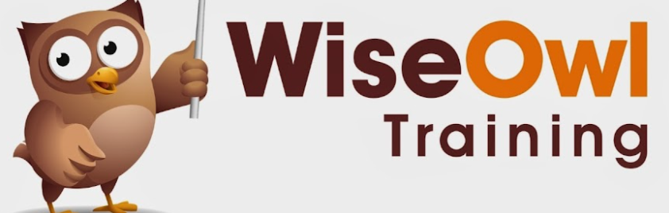

Playing the saxophone

Since October 2019 I've started playing the saxophone at my local town's harmony orchestra Concordia Oostzaan.
Luck had it that the Corona lockdowns have tampered with all live shows, but that didn't mean we did not play as a group. One of our projects playing at home together resulted in a nice video!
(I'm the one in the orange blazer on the black saxophone).
Coding
I also have a hobby in respect of coding.
I think it was around 2014 when I first started learning how to code in Excel using Visual Basics for Applications . At work we used a lot of excel lists, and needed to manually compare and evaluate data each month. I believed our computers should be able to do that for us. So with the help of youtube tutorials from WiseOwl, I have taught myself during a Christmas Holiday how to build tools that could do what we needed it to do, but simply clicking a button and answering a few simple questions.
And in 2021 I had some time off, giving me the opportunity to do a Web Development course with WincAcademy. Just because I like learning new things, and who knows where this may come in handy one day!
As part of this course, I have created my own Javascript computergame: Guess the number.
Do you
want to play?